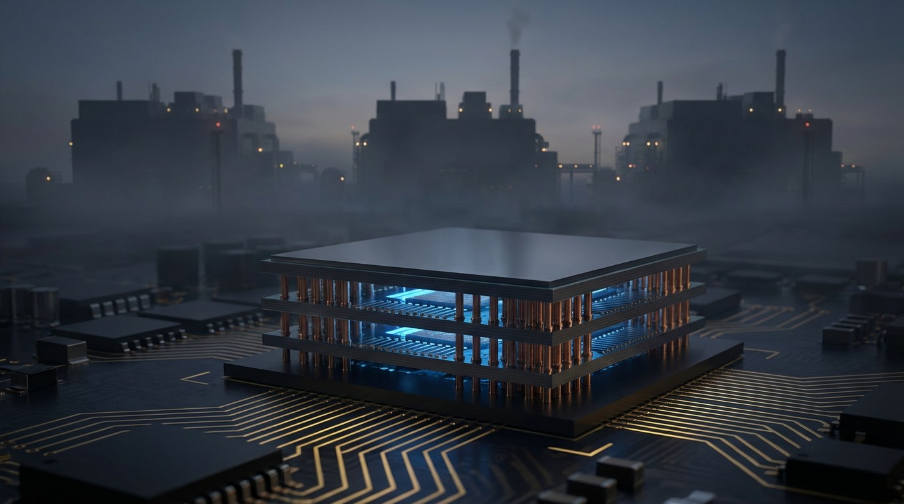

Three Companies Control the Memory That AI Needs. They Can't Make Enough.
SK Hynix, Samsung, and Micron manufacture every byte of High Bandwidth Memory that AI accelerators require. Each NVIDIA B200 GPU needs $4,800 in memory alone. Consumer GPUs, PCs, and smartphones are paying the price.

A single NVIDIA B200 GPU requires 192 gigabytes of High Bandwidth Memory. At current prices, that is roughly $4,800 in memory per chip. Not the whole chip. Just the memory sitting next to it.
Three companies on earth can make this memory: SK Hynix in South Korea (62% market share), Micron in Boise, Idaho (21%), and Samsung in Hwaseong (17%), according to Counterpoint Research's Q2 2024 data. Between them, they control 100% of HBM production. There is no fourth supplier. There is no Chinese alternative. There is no startup with a clever workaround.
And they cannot keep up.
The Bottleneck Moved
For two years, the AI supply chain story was about GPU fabrication. TSMC couldn't make enough chips. NVIDIA couldn't ship enough H100s. That constraint hasn't vanished, but a bigger one eclipsed it: memory.
HBM is not normal DRAM with a fancier name. Manufacturing it requires stacking 8 to 12 individual memory dies on top of each other and connecting them with thousands of through-silicon vias (TSVs), vertical copper channels drilled through each die. If a single die in the stack is defective, the entire stack is scrapped. SK Hynix recently achieved an ~80% yield on HBM3e, which TrendForce described as a breakthrough. Standard DRAM runs at 85-95%.
That yield gap sounds modest. It is not. HBM uses 2.5 times more silicon per gigabyte than conventional DRAM. So every wafer allocated to HBM production takes away 2-plus wafers' worth of consumer memory capacity. Same silicon. Same fabs. Binary choice: make HBM for AI customers who pay $15-30 per gigabyte, or make standard DRAM for consumer devices at $3 per gigabyte.
All three manufacturers chose the obvious option. Memory allocation has flipped: in 2023, 73% of production went to consumer devices and 17% to HBM. By 2026, it was 46% consumer, 42% HBM. In three years, the consumer share of global memory production lost a quarter of its allocation.
The Consumer Casualty Math
Here is a calculation that nobody seems to have run. Each B200 GPU requires 192GB of HBM3e. HBM uses 2.5x the silicon per GB. So one B200's memory consumes the silicon equivalent of 480GB of standard DRAM. A gaming GPU typically uses 12-16GB. A smartphone uses 8-12GB.
At 12GB per consumer GPU: one B200's memory allocation equals 40 consumer graphics cards' worth of DRAM. At 8GB per smartphone: that's 60 phones.
Scale it up. NVIDIA shipped an estimated 1.5 million datacenter GPUs in 2025. Memory for those chips consumed the silicon equivalent of roughly 60 million smartphones' or 40 million gaming GPUs' worth of DRAM. These are not units that were produced and diverted. They are units that were never produced at all, because the silicon went elsewhere.
Results are already visible. NVIDIA cut RTX 50-series production 30-40% in the first half of 2026. Not because demand fell. Because memory wasn't available. EnkiAI projects the PC market will shrink 9% and the smartphone market 5% in 2026, driven primarily by memory constraints pushing component prices up 40-50%.
$50 Billion in New Fabs Won't Fix It Yet
All three manufacturers are spending aggressively. SK Hynix is building a $13 billion facility in Cheongju, South Korea. Micron committed $24 billion over a decade in Singapore plus $6.14 billion from the U.S. CHIPS Act. Samsung is constructing a $17 billion fab in Taylor, Texas.
Combined: more than $50 billion in announced investment. None of it produces significant volume before 2028.
Semiconductor fabs take 18-24 months to build and another 6-12 months to ramp yields to production quality. SK Hynix's Cheongju plant broke ground in 2024. Samsung's Taylor facility has been delayed repeatedly. Micron's Singapore expansion targets 2028 for volume production. Even if every project hits its optimistic timeline, the supply-demand gap persists through 2027 and doesn't close until late 2028 or early 2029.
Meanwhile, demand is accelerating. HBM was a $6.5 billion market in 2024 and is projected to reach $25.1 billion by 2032. But those projections assume supply can scale to meet demand. If it can't, prices absorb the gap. HBM costs already rose 30% in Q4 2025 alone.
The Oligopoly Problem
Three companies is not a competitive market. It is an oligopoly with structural barriers that no amount of investment can quickly overcome.
TSV stacking requires specialized equipment that only a few tool manufacturers supply. ASML doesn't make the relevant systems here; this is about bonding, thinning, and via-etching tools from companies like EVG, DISCO, and SUSS MicroTec. Running these processes at 80% yield took SK Hynix years of iteration. Samsung's HBM yields are still believed to be lower, which is why their market share dropped from roughly equal to SK Hynix to 17% as HBM3e ramped.
New entrants face a brutal chicken-and-egg problem. You cannot develop competitive HBM yields without running production at scale. You cannot run production at scale without customers. You cannot win customers without competitive yields. SK Hynix broke through because it was already the world's second-largest DRAM manufacturer with decades of process engineering knowledge. There is no plausible path for a new competitor to enter this market before 2030.
Strongest Counterargument
The strongest case against treating this as a structural crisis: Samsung and Micron are catching up, and the oligopoly is loosening rather than tightening.
There's evidence for this. SK Hynix is projected to hold 100% of NVIDIA's initial HBM4 orders in H1 2026, but Samsung is expected to capture up to 30% of HBM4 orders in H2 2026 as its yield improvements materialize. Micron has also demonstrated competitive HBM3e products and secured design wins with multiple hyperscalers.
But more competitors producing HBM doesn't resolve the fundamental constraint. Stacking dies with TSVs at 55-80% yield is a physics ceiling that applies to all three. More manufacturers each allocating more silicon to HBM means even less aggregate silicon for consumer DRAM. The oligopoly loosening could paradoxically worsen the consumer shortage if all three race to maximize their HBM allocation to chase the 5-10x margin premium.
And none of this addresses the yield ceiling. Even at SK Hynix's industry-leading 80%, one in five stacks still fails. HBM4, which will stack 16 dies instead of 12, will push yields back down until the process matures. Every generational jump resets the learning curve.
Limitations
This analysis relies on publicly available market share data, primarily from Counterpoint Research and TrendForce. Exact production volumes and yield figures are closely guarded trade secrets; the numbers cited here are industry estimates, not audited disclosures. The consumer displacement calculation uses silicon-equivalent ratios, which simplify a more complex relationship between wafer allocation, die sizes, and production scheduling. Actual displacement could be higher or lower depending on how each manufacturer balances its product mix across facilities. NVIDIA's production cut figures come from industry reporting, not official company disclosures. The 2028-2029 timeline for supply-demand equilibrium assumes no unexpected demand acceleration from new AI architectures that require even more memory per GPU.
The Bottom Line
The AI revolution runs on memory that three companies manufacture in a process with fundamental physics constraints. Demand grew 5x since 2023. Supply grows 50-60% per year. Over $50 billion in new fabs won't produce volume until 2028. In the gap, every HBM chip made for an AI datacenter is a consumer device that doesn't get built. Your next gaming GPU costs more, your phone gets a smaller storage bump, and your laptop's price creeps up. Not because the technology got harder. Because the silicon went somewhere that pays better.